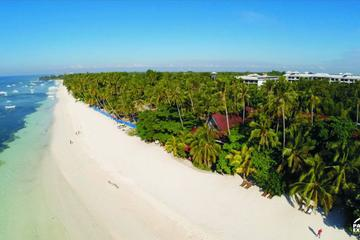

Maayong pag-abot sa BOHOL!
Welcome to Bohol
Welcome to Bohol, the friendly heart of Visayas and one of the most attractive tourist destination in the Philippines. We heartily invite you to come and visit Bohol yourself, and offer you this website to help you get the frirst impression.
Bohol has a tremendous lot to offer, so much that many tourist have a hard to select those most important things to see in their limited time. You can easily spend a week on the island, and just sleect the highlights.
To help you in your selection, we give a short overview of the most popular tourist desitinations, some of which are included in the organized tours that are offered by various travel agents..
Things to do

Sandugo blood compact site

Panglao Island
Experiece Bohol at its best!
About the Author
Head to Carmen to tour the famous Chocolate Hills- more than 1,268 grass-covered limestones that are nearly symmetrical in shape and height. picturesque hills turn a distinct shade of brown during the dry season and give them a passing resemblance to a certain confectionary treat, hence their name. They give your sightseeing an extra kick, try touring the hills by ATV.
Another popular tourist spot is the Philippine tarsier and Wildlife Sanctuary in Corella. Drop by the park for a rare chance to get up close to the Philippine tarsier in its natural habit. At just three to six inches tall, this animal is one of the smallest primates in the world. With gaping eyes, miniscule propostion and a sensitive nature, the tarsier cetainly has a quirly charm.
Nearby Pamilacan Island has made a name for itself with its move from its destructive fishing practices to sustainable exo-tourism and marine prevention. Most people head here for dolphin-and-whale watching tours, but the island also has accesible qhite sand beaches, excellent dive site and eve a centuries-old Spanish fort.